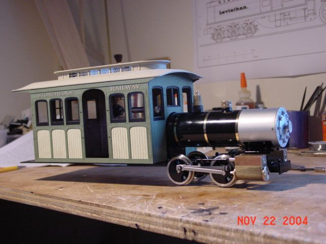
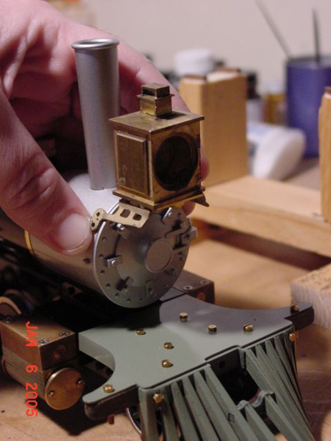
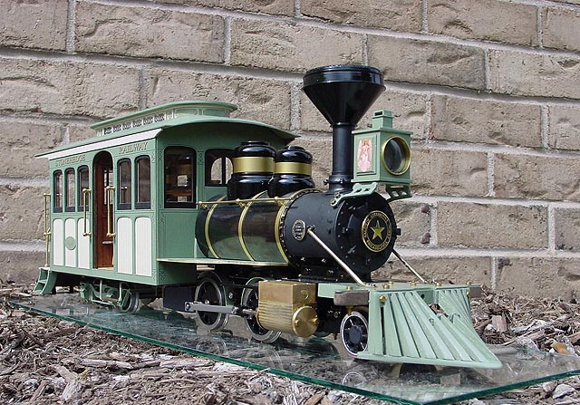
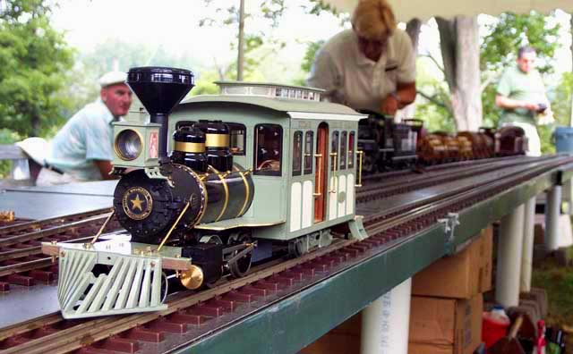

Scot's
Accucraft Ruby
"angel"
Page
2 - construction.
I
ordered my Ruby Kit from Royce at Quisenberry
Station.
the
kit arrived on October 26, 2004!
the
ceremonial first photo! 
Construction
of the kit began on November 10.
the
photo just as the first work begins:
and
the progress later that evening:
days
pass, work continues:
a
new long deck is needed to hold the cab.
it
is constructed out of a solid piece of aluminum.
(after
a brass deck fails..see this MLS thread for more details on the decision
to go with aluminum, and more construction details)
http://www.mylargescale.com/forum/topic.asp?TOPIC_ID=26072
that
thread is the official "builders log"..it contains more detail than this
webpage.
first
photo with the cab applied!

First
steaming of the Ruby!
she's
alive!
I
changed the eccentrics to "inside admission"
see
this thread for more detail on that:
http://www.mylargescale.com/forum/topic.asp?TOPIC_ID=20759

A
new pilot deck is scratchbuilt from brass.
the
"cowcatcher" portion of the pilot is a wood kit from
Vance
Bass - FH&PB Railroad Supply Company
the
pilot wheel is from a Bachman "annie" big hauler.
After
a lot of searching, I finally found the proper headlight.
this
is a solid brass Delton headlight, ordered from J&W
model trains, who still had some old Delton lights in stock.

I
really wanted one of those cool "russia iron" boiler jackets.
Which
in addition to good looks, also allows the addition of boiler handrails.
(handrail stanchions can not be drilled directly into the boiler! so the
jacket allows a layer for the stanchions to attach to.)
I
followed Kevin Strong's jacket technique, seen here:
http://www.mylargescale.com/articles/masterclass/mc2/mc2-03/patina1.asp
I
also used the Ruby jacket template, seen here:
http://www.nmia.com/~vrbass/steam/ruby/rubygallery.htm

The
quest for the perfect smokestack is still ongoing.
there
are 3 possibilities.
the
stock Ruby stack. (photo 1 below)
the
Ida stack (photo 2 below)
the
accucraft Shay stack. (yes, photo 3 below)
originally
I was hoping to get the Fort Wilderness Ruby stack, but because that was
a special, limited edition run, that stack isnt available as a seperate
part.
(more
detailed discussions on the stacks can be seen in the builders
log thread.)

I
am probably going to end up with the shay stack..I think that has the most
pleasing proportions.
although
the stock straight stack looks great too!
gives
the locomotive a very sleek no-nonsense look.
we
shall see. (those photos above have the stacks added digitally with photoshop.)
A
closeup of the swinging rear truck design.
it
pivots at the rear boiler screw.
The
locomotive will take 8' diameter curves.
The
front numberplate is a pin.
its
a bit large, but it works for me.
Got
a stack!
The
top is from the accucraft open cab shay.
it
was given to me by Bruce S. from California.
thanks
Bruce! :)
Finished!!
April
27, 2005


I
will post some pictures from her first steamup in a few weeks!
for
much more detail on her construction, please see the "builders
log" thread on MLS.
thanks
for watching!
Scot
update!
Summer
2005.
Angel
made two steamups this year, her debut was at Chuck's
steamup in Oswego, NY.
and
she also made it to Ron Brown's annual summer steamup at Paradise East.

and
oh yeah, I ended up going with the black cylinders with brass caps! :)
next up..a
live steam mason bogie.
|